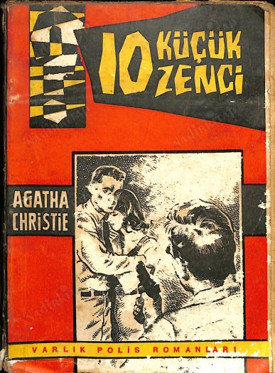

ON KİŞİYDİLER
Agatha Christie
On Kişiydiler veya eski adıyla On Küçük Zenci, İngiliz yazar Agatha Christie'nin yazdığı gizem romanı. Christie, On Kişiydiler'i "yazdığı en zor kitap" olarak tanımlar. Kitap ilk olarak 6 Kasım 1939'da İngiltere'de Ten Little Niggers (On Küçük Zenci) adıyla yayımladı.[1] Kitabın adı, romanda önemli yer tutan bir çocuk şiirinden geliyordu.[2][3] Ancak Amerikan kültüründe "zenci" kelimesi ırkçı ve onur kırıcı bir kelime olarak görüldüğünden kitabın Amerika'daki ilk baskısı And Then There Were None adıyla yayımlandı. Bu ad, aynı şiirin son dizesinden bir alıntıydı.[4] Amerika'da daha sonraki baskılar aynı isimle devam etse de 1964-1986 yılları arasında Pocket Books tarafından Ten Little Indians (On Küçük Kızılderili) adıyla da yayımlandı. İngiltere'de ise 1985'ten itibaren And Then There Were None adına geçildi.[5] İlerleyen yıllarda kitabın çevirilerinde de benzer değişiklikler yaşandı. Kitabın Türkçe baskıları Altın Kitaplar tarafından On Küçük Zenci adıyla yayımlanıyordu, ancak 2021'de Agatha Christie'nin ailesinin ve ajansının kararıyla romanın kırıcı dilinden arındırıldığı ve bundan sonra On Kişiydiler adıyla yayımlanacağı duyuruldu.[6][7] Kitap, 100 milyondan fazla satışla dünyanın en çok satan gizem romanı ve dünyanın en çok satan kitaplarından biridir.[8] Çok sayıda film, radyo, tiyatro ve televizyon uyarlaması bulunmaktadır.
Konusu Geçmişte verdikleri kararları, hataları ya da ihmalkârlıkları nedeniyle insanların ölümlerine yol açmış on kişi, bunu sır olarak saklamaktadır. Bu kişiler, günün birinde Una Nancy Owen adında birinden bir mektup alırlar ve tatil amacıyla Zenci Adası'ndaki gösterişli bir malikaneye davet edilirler. Konuklar, Owen adındaki kişiyle nerede tanıştıklarını bir türlü hatırlayamazlar ama söz konusu daveti ücretsiz bir tatil fırsatı olarak görürler ve teklifi kabul ederler. Ancak adaya vardıklarında onları bir sürpriz beklemektedir: Ev sahibi ortalarda yoktur. Adada onları bekleyen yalnızca karı koca olan iki görevli vardır. İşin diğer bir ilginç yanı bu çiftin de adanın sahibini hiç görmemiş olmalarıdır. Aynı günün akşamı, akşam yemeğinin ardından misafirler aynı odada sohbet ederken gramofona konulmuş olan plak çalmaya başlar ve ev sahibinin sesinden geçmişte neden oldukları ölümlerden dolayı suçlu bulundukları ifade edilir. Plak bir yargıcın mahkemede konuşması şeklinde çalmıştır. Bu olay ortamı bir anda gerer ve konuklar, kendilerine bir eşek şakası yapıldığını düşünerek ertesi gün adadan ayrılmaya karar verirler. Ancak o gece başlayan ölümler adada kaosu ve korkuyu beraberinde getirecektir. Ertesi sabah gelmesi beklenen ve her gün yiyecek ve gerekli şeyleri getirdiği uşak tarafından belirtilen bot ertesi sabah gelmez. Sonraki günler de gelmeyecektir. Artık adaya davet edilen misafirler mahsur kalmışlardır ve bir yandan da zeki katili bulmaya çalışırken diğer yandan katilin kapanına yakalanmamaya çalışacaklardır.
Evde bulunan odalarda bir çocuk şiiri asılıdır: On küçük zenci yemeğe gitti, Birisi kendisini boğdu ve kaldı dokuz. Dokuz küçük zenci çok geç kalktı, biri uyuyakaldı, kaldı sekiz. Sekiz küçük zenci Devon'da geziye çıktı, Biri kayboldu, kaldı yedi. Yedi küçük zenci odun kırdı, biri kendisini kesti, kaldı altı. Altı küçük zenci kovanla oynadı, bir balarısı, içlerinden birini soktu, kaldı beş. Beş küçük zenci mahkemeye gitti, Biri idam cezası aldı, kaldı dört. Dört küçük zenci denize gitti, Birini balık yuttu, kaldı üç. Üç küçük zenci hayvanat bahçesine gitti, Birine ayı sarıldı, kaldı iki. İki küçük zenci güneş altında oturdu, Biri güneşte kızardı, kaldı bir. Bir küçük Kızılderili tek başına kaldı. Gidip kendisini astı ve hiçbiri kalmadı.
ON KİŞİYDİLER - Genel Özet
En popüler kitaplar arasında yer alan On Küçük Zenci, en iyi polisiye romanlarından biridir. On kişi, geçmişte verdikleri kararlar yüzünden insanların ölümüne sebep olmuşlardır ve bunu sır gibi saklarlar. Zenci Adası; Devon sahilleri yakınında ve üzerinde modern bir köşk olan bir yerdir. Sahibi Amerikalı bir milyoner olsada daha sonra Owen adında sadece isim üzerinde var olan ama aslen varlığından bihaber olunan biri tarafından satın alınır. Farklı nedenlerle adaya çağrılan on kişi içerisinde hiç kimse ev sahibi U. N. Owen’i daha önce görmemiştir; uşak ve eşi de dâhil… Daha ilk gece evde tuhaf şeyler olmaya başlar. Anîden çalışmaya başlayan bir gramafon hepsini bir cinayetle suçlamaktadır. Gruptakiler her ne kadar itiraf etmekten çekinseler de bu cinayetleri işlemişlerdir. Her birinin odasında oturma odasında mutfakta da garip bir tekerleme yazılıdır. Köşkün yemek odasında ise 10 tane cam biblo bulunmaktadır. Adada mahsur kalan bu insanlar sırlarını birbirlerine anlatınca tek tek ölmeye başlarlar. İlk gece Tony Marston ölür. Tıpkı tekerlemedeki gibi içki içerken anîden yere yığılmıştır. Masanın üzerindeki zenci heykellerinin sayısı da dokuza düşmüştür. Ölüm korkusuyla tüm sırlarını döken bu kişiler, aslında bir şekilde geçmişte birbirleriyle bir ilişki içindedir. Neden orada olduklarını ve katilin amacının ne olduğunu çözmeye çalışırlar tabii öncesinde katilin kim olduğunu da. Bunlar çalışırken katil de boş durmaz elbette, biblolar git gide azalır.